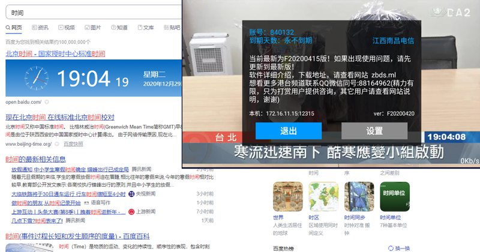
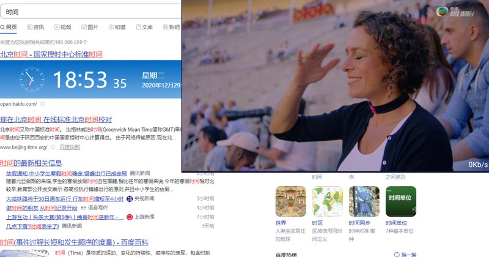
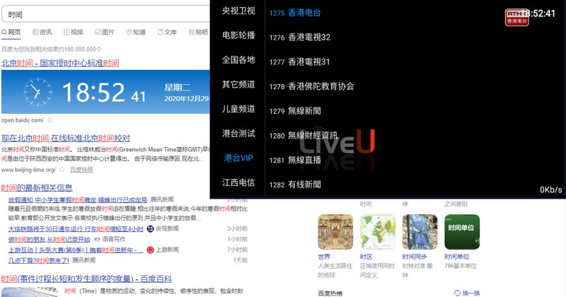

直播电视app是一款适用于安卓设备的免费软件，用于学习交流！可在安卓系统的电视，手机，机顶盒安装观看一些节目！其中所有资源均来源于网络网友分享，版权属原单位或公司所有，其中内容如有侵权请联系删除！
下面是最新版的下载链接
兰奏网盘下载链接
下面是一些使用说明
须知1.首先，在软件出问题的时候，推荐你可以先下载最新版试试，因为软件一直在优化升级，加入新功能……如果你目前安装的版本能正常使用也可以继续使用。
须知2.安装或升级过程中出现任何问题可以先把老版本删除再安装升级!
须知3.由于安卓版本太多，软件自动升级时如果卡死可以删除老版本，重新在本页下载新版本安装即可。
须知4.提示网络连接失败，那是因为一些原因你的IP被服务器拒绝登入。把你家的光猫断电10秒重启，IP会变化，再次打开软件就好了，或者是等一段时间会自动修复 。
一.按返回键可以进入设置页面，里面有多个项目可以调节，可以根据自己的需要开关

如果你的设备比较新，支持硬件解码。可以在软件里面开启原生解码，节目画质和流畅度会提高很多，默认IJK解码是为了兼容更多的设备！
二.软件内置多组源，如果你的网络播放不了当前节目源，会自动跳到下一组或下一台（默认30秒）也可以手动更改，或是按左右键手动选择你最流畅的源。软件会自动记忆！
后台维护者也会不断增加稳定快速的源，删除不好的源，所以频道数量经常会变化。速度慢卡的节目频道你只要手动按左右键换源，选择最流畅的即可！
港台vip里面是打赏用户专享，里面有更多节目，需要打赏支持作者后才有！
打赏支持作者，观看更多节目
维护这款软件以来，付出了太多的时间。上班了，实在没有更多精力为软件维护和继续服务器投入了,所以开通打赏功能！
1.方法
进入软件设置页面，左上角有个账号！可以在打赏时留言输入你的账号，作者会很快为你激活权益(如果太慢请再联系下微信QQ或邮件)。激活后，软件左边菜单下面就会多一些栏目，里面会多一些节目。
30享受3个月权益，60享12个月权益

请知悉：打赏是对软件的认可，并非购买。同时作者会对打赏用户提供一定的技术支持，并开通一个专区，里面会不定期增减很多热门的港台海外节目！
2.权益
可为打赏者提供有限的技术咨询,QQ微信同号(88164962)精力有限其它用户勿扰，谢谢
打赏者的软件菜单里面多一些栏目，里面会多一些节目

打赏用户请知晓：
港区的节目都需要服务器中转，所以肯定会慢一点，加载好了一般就能正常播放！播放的效果受你的网络和设备解码能力影响非常大，有些节目特定的地区不能播放，这个没有办法测试，但你所在的地方肯定有能放的，后台也会不断优化，不段增减节目源，作者尽可能的多维护一些节目上线，有些特殊因素造成不能观看还请谅解，谢谢你的支持！！
总体来说 电信网》联通网》移动网》其它网
科普：同样的时间同样的频道，为什么我播放不了，别人可以流畅播放呢？
原因一. 你的网络实际链接速度不够或被你的运营商劫持。（如果别人能放就排除了节目服务器的原因）
实际的网络链接速度不够，这个和运营商签约的速度不一样有很多原因：
1. 运营商原因，运营商号称入户百兆千兆，但是一个单元楼下来就那么多用户，一个小区就更多了，一般一个小区一个机房，一个楼一根主光纤，一个主交换机（有是还在用千兆的，有的是万兆的，十万兆的别想了太贵）现在家宽基本起步100M了，那么多用户你加加看超过设备总容量了吧，这个怎么样保证用户速度呢？运营商就是断定用户不会同时使用，给你加限制，让你实际速度差很多！测试速度用的是下载协议，这个运营商设备会自动放行的，所以能到满速，其它应用协议是不同的，运营商设备能精准识别！还有为什么商用宽带10M要几千一个月，家用宽带100M也就几十有的还免费送，缩水宽带，共享宽带百度一下。不了解你永远不会明白1000M光纤怎么刷个视频还会卡。还有的运营商会劫持一些IP地址到他们的广告服务器或是直接屏蔽，这个原因未知，也没有办法各地实际测试。
2. 你家里内网的原因，运营商线路入户后，要经过光猫—-路由器—网线或是无线—链接你的终端，这其中的任意一环的性能都会影响你最终的网速。比如光猫路由器用了百兆端口，无线WIFI连接有2.4G和5G，速度相差很多，网线有5类6类铁苡铜苡无氧铜苡之分，水晶接头有千M百M之分，甚至是线序错了，或是断了一根线苡，都是能用的只是速度下降很多。
总之网络应用的最终速度表现是一个木桶原理，它取决于你所有环节中最差的一环。
原因二. 你的设备解码性能不够。
这个一般来说设备越新越贵应该解码性能会更好，但也不全是，比如贵的电视，它屏幕什么的都比较好，解码不一定强！因为节目源都是加密的，需要终端设备解码才能正常播放，而且加密方式不一样，所以在右下角显示网速会跳动，有时还是0，但确能流畅播放。

关于免费版
兰奏网盘下载链接
如果您的账号提示已到期，或不能使用。请重新下载新版使用! 默认免费一年，到期会自动续期。
也可以发邮件给维护者，zhoujie218#gmail.com,附上你的软件设置页截图，会免费为你延长使用时间。或者等几天，作者会定期为到期的用户免费延长时间！
当然更加的希望您请作者喝杯咖啡（打赏时请留言附上你的账号，作者会给你开通权益）
我们的微信 QQ同号：88164962
通过后请发打赏截图账号截图，直接说明来意！
精力有限，只为打赏者提供有限技术支持，其它用户请查看网站说明，勿扰！谢谢！
30享受3个月权益，60享12个月权益